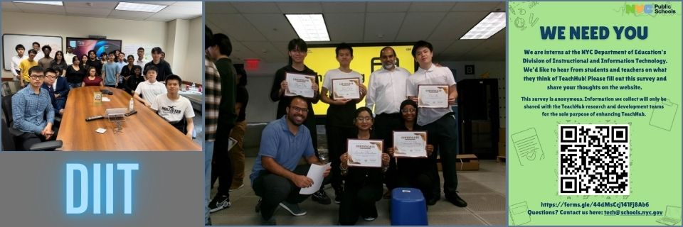
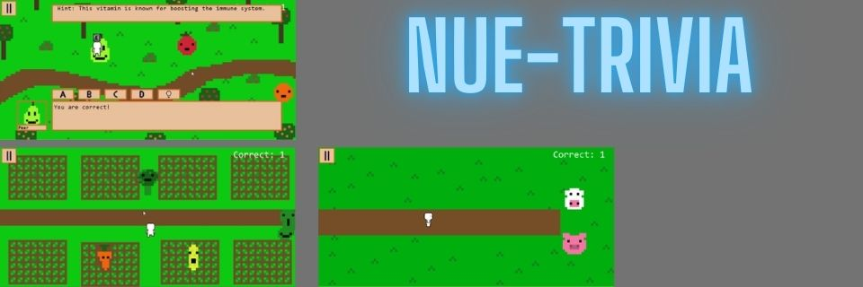
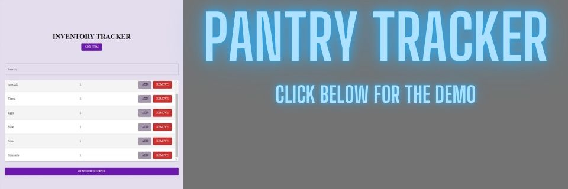
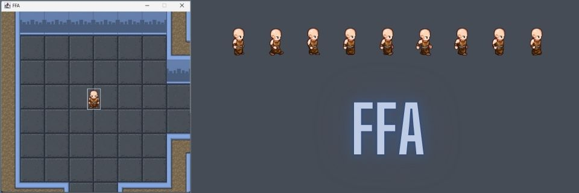

About Me
Who I am |
Hi! I am currently a rising senior in Brooklyn Technical High School in the Software Engineering major. If you prefer to read about my more technical side, please refer to my
resume or my portfolio.
The picture attached above is my beloved dog, she'll be turning 6 this year. It also showcases my ranks in the games that I play, and the languages that I have coded in. My many hobbies consist of sleeping, eating, and occasionally playing video games.
Although I have such boring hobbies, I take pride in taking risks and trying new things. Such as trying side hustles like reselling amd investing in stocks.
My Inspirations |
I've played video games since the age of six, I always loved the fact that I could virtually connect and have fun with people that I have never seen before.
Also, being able to basically disconnect from reality for a short while was a driven factor on why I liked it. Due to this, ever since I've been drawn to the idea of computers
and through that I find it interesting exploring how things that I use, work.
Work
Headstarter AI
Software Engineering Fellow | ( Jul 2024 - Sept 2024 )
Developed and collaborated on AI-driven projects, including Pantry Tracker, AI-powered flashcards, and an AI Customer Support system
Participated in mock interviews, honing interviewing and communication skills for technical roles
Utilized skills in Next.js, Material UI, and OpenAI’s API to build scalable solutions
Division Instructional and Information Technology (NYCDOE)

Intern | ( Jul 2024 - Aug 2024 )
Introduced a strategy outlining the approach to improving TeachHub
Conducted a survey on K-12 students and teachers to gather feedback and insights
Facilitated several one-on-one interviews to gather additional qualitative data
Organized data from surveys and interviews into a spreadsheet
Created a report based on the collected data, summarizing key findings and recommendations
Pitched our final findings to the CIO and other high-ranking officers our solution
Project Intern | ( Apr 2024 - May 2024 )
Introduced a strategy outlining the approach on standardizing official transcripts
Presented a proposal containing edge cases, current NYC DOE systems, UML diagrams, and how records come from in certain specified systems, demonstrated 3 scenarios where someone makes a request, which records are needed, where the records come from, and how they are delivered
Identified systems that contain and give access to transcripts, IEPs, 504s, PSAL, Disciplinary, etc
Researched records belonging to students enrolled in NYC public schools
My Personal Projects
Nue-Trivia | ( October 2024 )
HACKATHON ENTRY / WINNER

Created a simple question and answer game, dedicated towards educating the younger audience about nutrition
Created original sprites, ability to answer questions, generate questions using AI, and a point system
Utilized JFrame, JPanel, and GPT4o-mini
Pantry Tracker | ( August 2024 – Present )

DEMO
Developed a responsive web app that tracks pantry inventory and generates recipe suggestions using AI integration
Implemented a search feature to quickly filter items from inventory and modals for adding or adjusting quantities
Enhanced user interface for mobile responsiveness
FREE FOR ALL | ( April 2024 – Jun 2024 )

Created a simple 2D overhead multiplayer video game
Added collision-detection, multi-sprite animation, and multiplayer across several devices
Utilized JFrame, JPanel, and Server Sockets